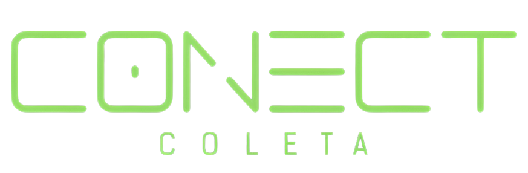
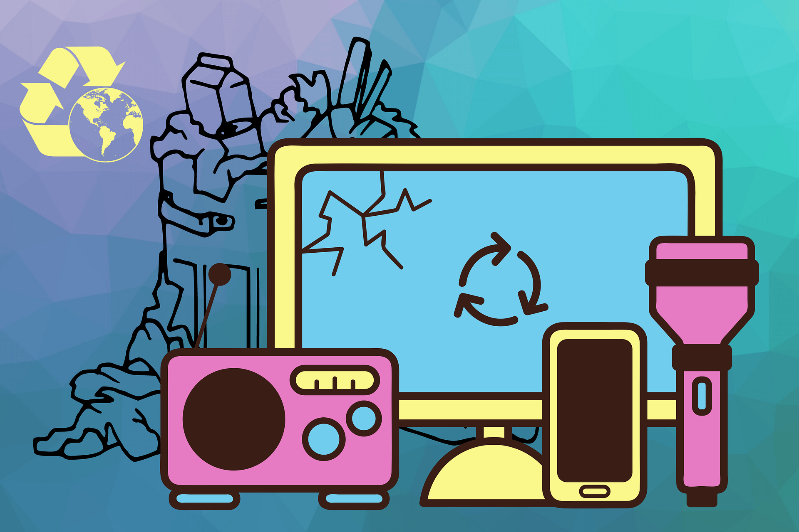
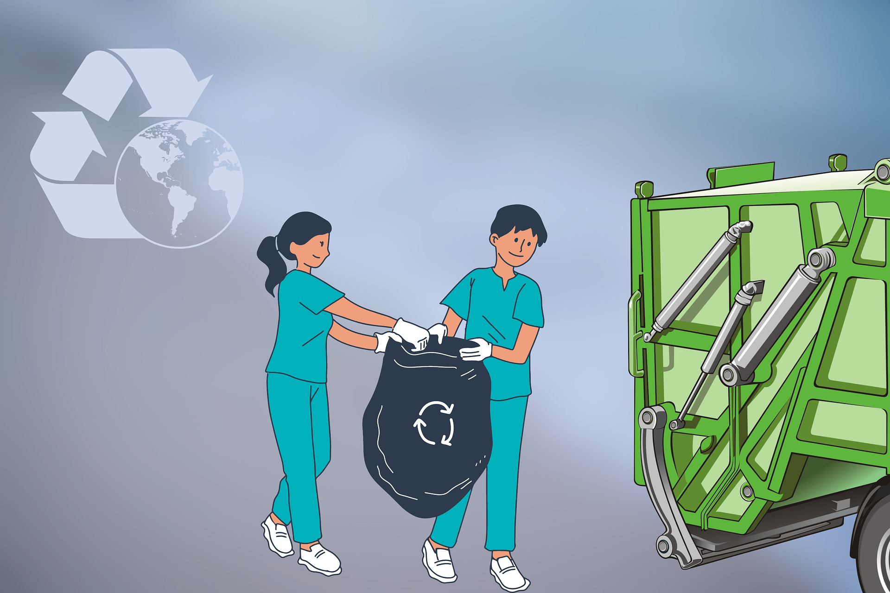
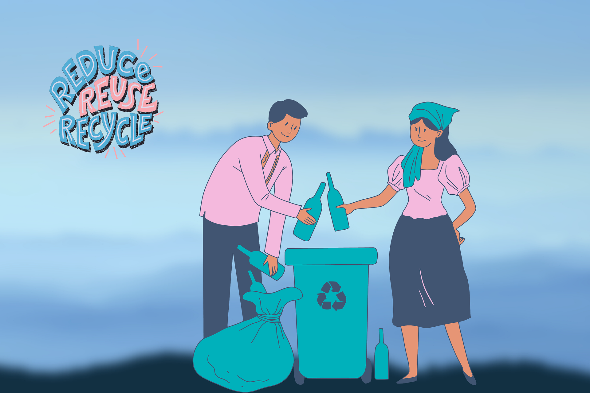

Transformar é um dos lemas mais importante que carregamos conosco. Ressignificamos toneladas
de materiais descartáveis todos os meses, onde produtos que iriam parar em aterros ou lixões, ganham uma
nova forma, retornando para a indústria e posteriormente para o mercado.

Segmentos para uma reciclagem

Coleta de Materiais
Identificação de materiais recicláveis: Determine quais materiais serão reciclados em sua casa como papel, vidro, plástico, metal, eletrônicos, etc..

Monitoramento e Avaliação
Acompanhamento de métricas: Teremos a quantidade de materiais reciclados e monitoramento o progresso do programa ao longo do tempo, como empresa de sofware.

Educação e Conscientização
Campanhas de conscientização: Desenvolvemos campanhas de sensibilização para educar a comunidade sobre a importância da reciclagem e como fazê-lo corretamente.
Se interessou no nosso trabalho?
Faça o cadastro
Abra sua mente para as novas oportunidades
Receba diariamente nossos resumos de como você pode fazer seus descartes de resíduos.